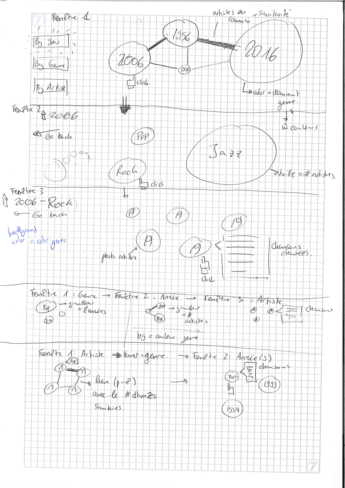

Process Book
As we have formed our team on the first week of class, we already had an idea of what project we wanted to do. We are all fond of music, particularly Jazz, so it was only natural that we work with the Montreux Jazz Festival (MJF) dataset the teacher mentioned throughout the course. However, our idea was far from set, let alone from being well thought out.
On Tuesday, when the teacher spoke about the project, it only reinforced our will to work with the Montreux Jazz dataset. Looking at the visualization from his website (and from the open source online MJF database), we tried understanding what data we were going to be provided.
Our brainstorming was pretty messy, to say the least, but we managed to channel this profusion of ideas coming from the excitement to begin the project to come up with a good project definition. We wanted to model the evolution of the Montreux Jazz Festival through the years because we noticed that each one of us had a different picture of the Festival in mind: Othman dreamt about the glorious days when Ella Fitzgerald, Etta James and Nina Simone sang at the MJF; Saskia remembered the “outcasts” that came like Led Zeppelin and David Bowie, while Nicolas was all about the modern artists such as Petit Biscuit and Woodkid.
Now that we had the framework, the main discussion was how to actually visualize it! For some reason, we were clearly drawn by bubbles as our main focus was constructing a graph linking all the information between them. As the drawing below is somewhat confusing, here is a clearer explanation of our idea:  To study the evolution of the Festival, we found 3 metrics: the year, the genre and the artists. Thus, our project consists of layering these elements in different orders to have a clear overview of the changes.
“By Year”:
- By clicking on this button, the visualization starts by displaying a graph where the nodes represent the years, their color the predominant genre of the said year and the edges between the years the artists that came to these 2 editions. We use forces to position the nodes so that years with the most similar artists are placed nearby.
- When clicking on any node, we enter the second level of the visualization: the display by genre. This time, the nodes display genres and float randomly through the screen. In this visualization, the information we want to convey (the number of artists of each genre) is given by the size of the nodes. For clarity, we use the same color palette to display genres as the one in the level above.
- When clicking on any node, we enter the third level of the visualization: the artists performing the music genre at the edition specified above. Once again, the nodes float randomly on the screen. The background of the page is of the color of the chosen genre and the background of each node is the picture of the artist. Finally, when clicking on each artist, we can find the list of songs performed during the concert.
- By clicking on this second button, the visualization starts by displaying a graph where the nodes represent the genres. As explained above, the bubbles float randomly on the screen but this time, their size represents the number of years where this genre was performed at the Festival. The color palette of the genres stays the same.
- When clicking on any genre, we enter the second level of the visualization: all the years where this genre was played. This visualization stays similar to the previous one (the links represent the number of artists who performed in both editions and the color of each node is the color of the predominant genre of the year). The only difference we have is the size of the bubble: this time, it represents the number of artists which performed a music which can be defined using the selected genre.
- When clicking on the nodes, we enter the third level of the visualization which is exactly equal to the one previously described.
- By clicking on this last button, the visualization starts by displaying a graph of the artists. Even though we planned on making a graph, we thought it would be too messy so we settled with a simple ensemble of bubbles floating on the screen. Each bubble represents an artist with his picture as the background. When hovering on the node, we can see to which genre the artist corresponds.
- When clicking on a node, the second level displays all the years when this artist performed. By hovering on the year, we can see the list of songs of that year’s concert.
As we only finalized our project idea at the end of last week, we had some questions which we tried to clarify with the teacher and the assistant.
- Regarding the “By Year” part of the project, should the size of each bubble represent the number of artists which performed at the festival? For the other levels of the visualization, are random bubbles floating on the screen the best idea we could come up with? And finally, would it be interesting to represent the size of each artist’s bubble according to his Spotify popularity of to the number of people who attended the concert?
- Regarding the “By Artist” part, would it be better to color the bubble using the artist’s genre instead of displaying his picture?
We were told that the scope of our project wasn’t very realistic, especially given our idea about the transition between the different layers of the project: we wanted to zoom on each node to display the rest of the code. As we couldn’t use JQuery, it would prove to be pretty difficult. This prompted us to drop our 3-part project and only keep the “By Year” visualization which was the more informative and would be more interesting as a data story (which reminded us we didn’t have any yet, shame on us!).
The remaining of our questions had to do with the database’s format and the information it provided. As we expected to have it by the end of the week, we didn’t really ask questions about it during the exercise session. However, obtaining the dataset proved more difficult than expected as we didn’t get any response to our mail (which was probably lost in the feed, a problem that often happens even to us).
In the meantime, we started implementing the basic elements of our visualization. We mostly played with the bubbles: how to attach a name, change their color, set a picture as their background. We also tried to work on their spatial representation: how do we place them randomly? Is there any way for them to move across the screen? How can we implement a graph using forces?
Still no sign of the MJF dataset … But this was not really a handicap this week as Tuesday’s Lecture 17 on graphs was really a turning point in our project (yes, this means we finally managed to find a data story!). You can see the drawings of our new visualization at the end of this week’s post.
One of the best ways to represent a linked graph is by using a circular layout. This is particularly interesting for us as this is what we are trying to do in the first level of our visualization. By displaying the bubbles on a circle, we have an immediate vision of the evolution of the Festival simply by looking at the color of the bubbles and their size. Even though the format of the graph changed a lot, we did not give up on using the bubbles’ color to represent the predominant genre or their size to represent either the number of artists performing at that specific edition or the number of people which attended the edition.
Regarding the second layer displaying genres, we settled for a radial layout as the bubbles did not provide any real meaning. By using the relative weight of each genre in that year’s edition, we have a better overview of the actual evolution of the MJF rather than simply using bubbles representing the absolute size of each genre as the festival is getting bigger each year.
In the third layer, we do not change the information we display in the bubbles but simply think about adding our points on a map using information about the artist’s location. However, we still did not think this idea through and do not know how hard it is going to be to implement.
Thus, this week’s work was mostly centered on how to implement the new features we decided to add to our visualization. To make sure this works, we created a (very small) fake database using the JSON format and the information we needed.